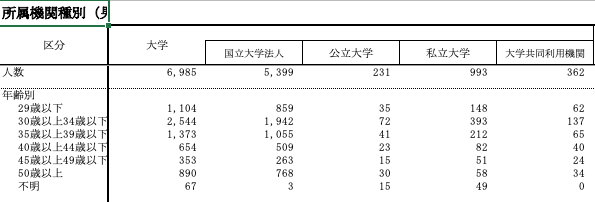
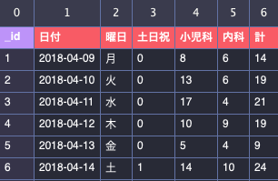
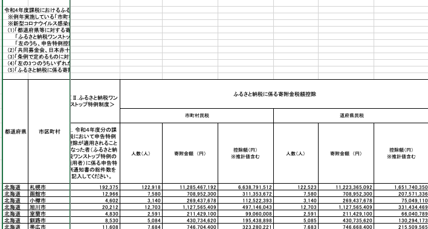

![]()
ImportantⅠ. 【お願い】実習用データの再提出の検討
- 6月26日の授業の際に、実習用のデータをもってきてもらいましたが、行政機関が作成したデータ（表）が多く、整然とした（tidyな）データではないものが多かったです（授業の際に気がつけばよかったのですが、すみません）
- このようなデータは大きな変形が必要であり、また、変形したものの、作図として使える情報量があまり多くありません
- Rで日本の統計データを効率的に取得しようなど、便利なパッケージはありますが、それでも難しい部類だと思います。
- 6月26日に提出したデータに強い拘りがないのであれば、他のデータ（以下に、私が見つけたサイトを紹介しています）を使うことを検討して下さい
- 次回7月3日の授業内で、一人ひとり、相談に乗りたいと思います
- Google Formsを使ってアンケートをとる予定の受講生は、問題ありません
Ⅱ. tidyなデータとmessyなデータ
1. 整然とした（tidy）データの特徴
- カラム名と値からなる、シンプルな行列からなるデータ（データセット）
- ➡ カラム名（列に一つしかない、あとはデータのみ）を操作するだけなので、dplyrの過程が少なくて済みます
2. 雑然とした（messy）データの特徴
- 同じ列にカラム名が複数ある、カラムを細分化しているものは、雑然とした（messyな）データであり、変形が難しいです
- 人間が目視することを前提とする、データ上意味のない空白が交じっているものもmessyなデータです
- エクセルでセルを結合させているようなもの、結合させていなくてもそれに類する空白行をおいているもの
- ➡ 一列に適当な一つのカラム名を作成するプロセスが必要で、dplyrの高度な運用能力が必要です


3. 注記
行政が作成した表（データ）であっても、以下のような表は空白箇所が少なく、dplyrによる加工はそれほど必要ありません

Ⅲ. 作図しやすい情報量の多いデータ
- 複数の意味をもつ、データがそろっている
- 例：日付; 地域; 年齢; 性別; 人数; 金額
- 折れ線グラフ： 日付 × 人数；日付 × 金額
- 散布図：人数 × 金額
- 棒グラフ：人数；金額
- 例：日付; 地域; 年齢; 性別; 人数; 金額
Ⅳ. データの入手先（お勧め）
1. ckan
⑴ ckan: 金沢市
- tidyなデータ例：
次回から「金沢広域急病センター利用者数」を例に実演、説明します
金沢市は山野之義前市長がソフトバンク出身ということもあり、データ活用への意欲、tidyデータへの感覚があるのだと思います。ckanへのデータの登録は、石川県全体（あるいは全国的？）の取り組みのようですが、分析上、意味のあるデータを登録している自治体は少ないです。金沢市は例外的です
東京都のckanも充実しています。特にcsvファイルで提供されているデータは、tidyデータで、情報量が多く、よいものが多いです
2. 観測・実験装置
-
福島県では、東京電力福島第一原子力発電所の事故後、原子力災害本部長から福島県知事に対し野生鳥獣（イノシシ、ツキノワグマ、キジ、ヤマドリ、カルガモ、ノウサギ）の肉の摂取及び出荷制限の指示があり、県内で捕獲された野生鳥獣の体内における放射性核種濃度測定調査の結果についてお知らせをしています。
-
- 生態学にかかわるオープンデータのリンクがまとめられています。アカウント登録が必要なサイトがほとんどですが、よいデータが集まっているような印象を受けました。研究分野が近い受講生はアカウント登録をしてデータを入手する価値があるのではないかと思います。
Ⅴ. 提出先
- 演習：Google Forms
再提出する場合は「授業回を選択してください」を「6月26日」として提出して下さい
Copyright
苅谷千尋 2024